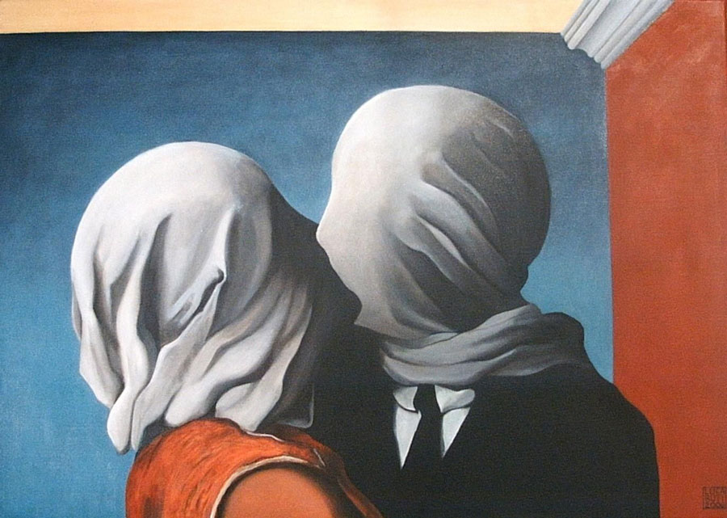
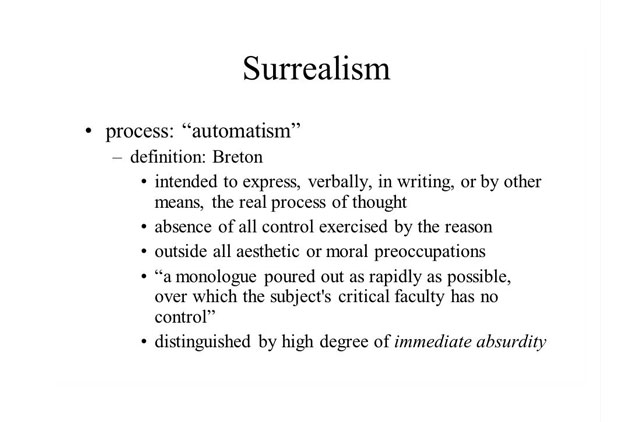

WHAT IS SURREALISM?
Surrealism is the land of dreams. It is the obscure, the strange, the marvelous, the sublime, the ugly, and the beautiful. It is what you think you know, but inverted. It doesn't make sense in your waking-self logic and adheres to its own kind of dream-logic. There are no rules. It is the absolute source of creativity, especially if you're in a creative funk. You unlease your subconcious through practicing surrealist excercises, and that realm is a place of potent ideas. It will make things weird, it will make you tap into your inner-weird, and weird is usually potent stumuli for art.
TIME TO GET SURREAL
Surrealist Automatism is "...a technique of subconscious drawing in which the artist allows his unconscious mind to take control..." Find a place where you can be alone, and won't be bothered. Gather your preferred creative mediums around you. If you like to paint, get a canvas and your brushes and colors ready. If you like to write, gather pens and paper, or open a blank document on your laptop. The goal is to bring your dreaming into waking life. We do this by bypassing our waking mind while awake. Its kind of like meditation, but more interesting.
AUTOMATE
Now shut of your mind and allow unbridled stream of consciousness without critique. Don't think, and just do. Paint with reckless abandon, write gibberish, invent new languages, paint windows into new worlds. Don't think about it. Don't think and watch how the subconscious mind unwinds and shows you very curious things you didn't imagine. If you need a time limit, try a minute. If that's too long to go without thinking, try 30 seconds. It gets easier, and more interesting each time.